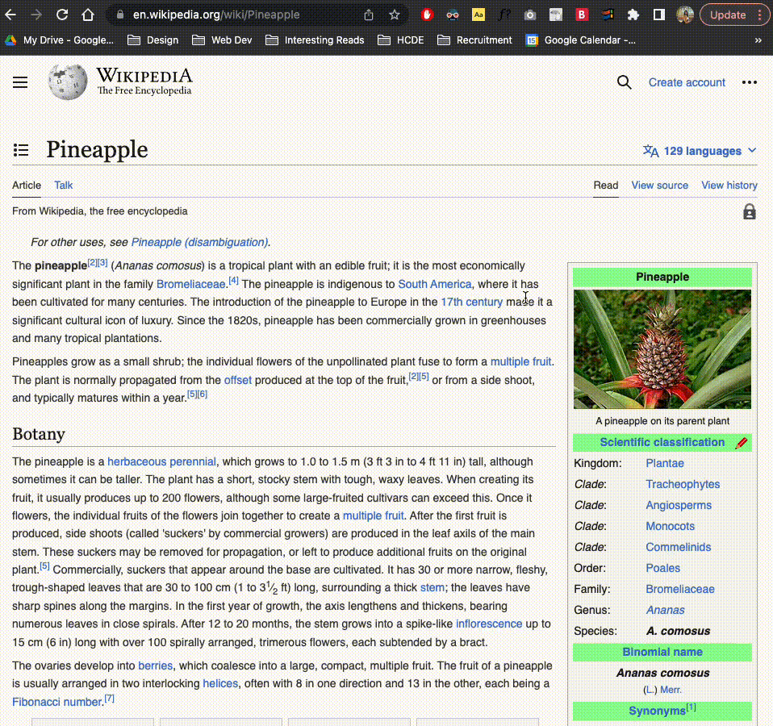
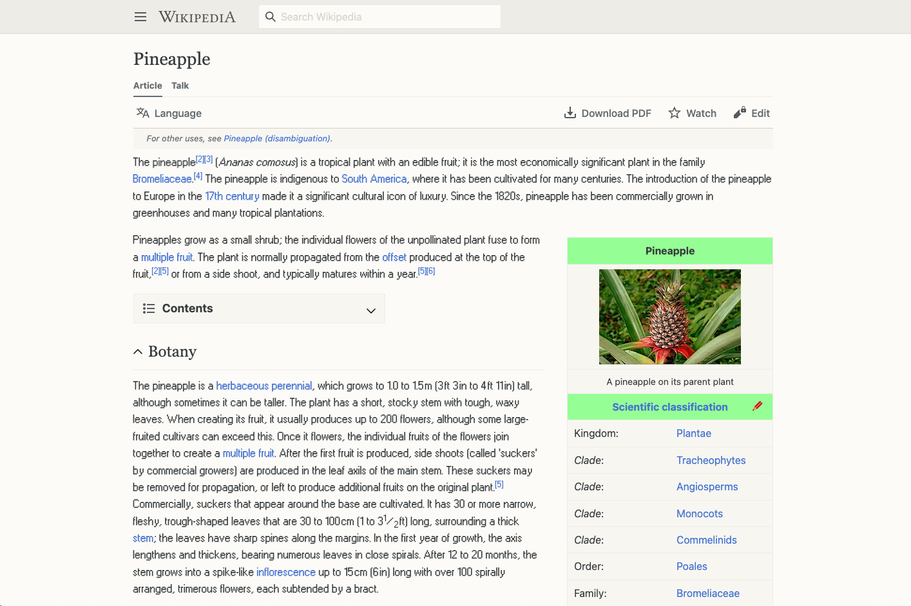

A browser extension is a program that lives within the browser. It has the capability to manipulate the DOM and have access to the current website the user is on. I chose to make a Windows 95 themed browser extension that changes the font of the text on the page. In order to access the extension and include it onto your own browser, go to this link and download the windows-95 folder. If using Google Chrome, go to chrome://extensions, "Load unpacked", and select the downloaded "windows-95" directory. Go to any website (https://en.wikipedia.org/wiki/Pineapple) and select the Windows 95 icon from your browser extensions, and watch your font change!
For this project, I took a couple of steps. First, I had to consolidate the general file structure for creating a browser extension; this includes a manifest.json file, and appropriate content scripts to be able to access browser extension popups. Next, I started coding the simple user interface (HTML/CSS)for the extension that includes a brief introduction to the extension and then a toggle for transforming the site into Windows 95 theme. After creating the client-side code and scripts, I started working with the Javascript logic that would do the magic of transforming the text on the page into a completely different font. This part of the process was definitely the hardest, I ran into a lot of obstacles including not knowing how to pass information between the content and displayed JS files for my extension. Using the Chrome API was also a new challenge that required a lot of Google searching. In this process, I encountered an obstacle with resetting the original's page fonts. I originally was thinking very complexly: to save each HTML node's original font in a JS dictionary whose (key, value) pair is (HTML Node, original font). However, this method was not working in the way I expected it to. After tweaking around with the code and still getting no progress, I realized that I could just refresh the current tab when the user wants to 'reset' the font, and switch the toggle to off. Another issue in particular was that I wasn't able to select all of the HTML text on the page very easily. At one point, I was only able to select all the p tags on the webpage:
After many hours of trial and error, I was able to finish my extension and have it exhibit the proper behavior.
The aforementioned issue was one of logic. While my first impression for selecting all of the text on the DOM was to query select all of the p tags, there are more than just p tags that contain text rendered on the page. Thus, I had to rethink how to select all of the nodes that had proper text that I could apply style changes to. I resolved this by thinking about an example; an tag would have text inside of it, and I was able to utilize the browser console to observe that when I selected an HTML node, there is a property called 'innerText' that is the displayed text on the rendered webpage. Using this to my advantage, I made a loop through all of the nodes to check if the 'innerText' property existed in each DOM element.